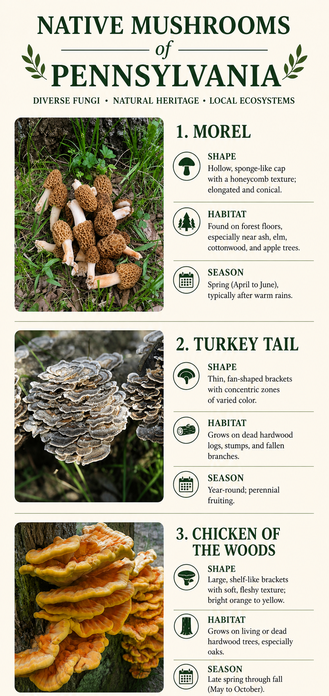

Gallery

Cap shapes
Mushrooms come in many shapes! They can be rounded, shelf-like, cone-shaped, or puffball-like depending on the species.
Woodland habitats
Mushrooms can grow almost anywhere! Some grow from soil, while others grow directly on dead logs, stumps, or living trees. You might even find one growing in humid houses!
Seasonal changes
Mushrooms grow year round. Different seasons bring different fungi to our forests!
Visual clues
There are many ways to identify mushrooms! Color, texture, underside shape, and the growth pattern all help identify mushrooms.